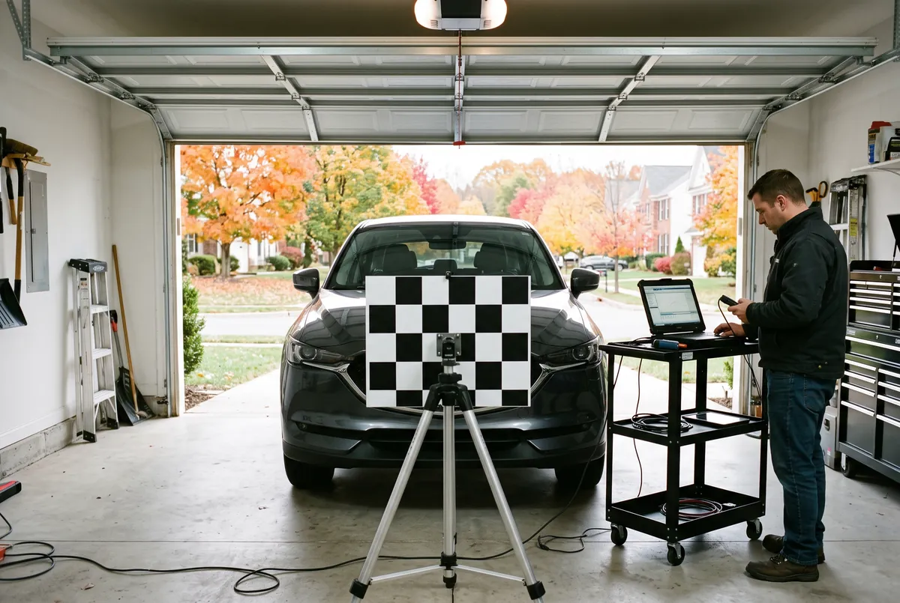

ADAS calibration in Bowie re-aims the forward camera that sits behind your rearview mirror after a new windshield is installed. Bowie Auto Glass Repair handles it as part of the windshield job, so lane-keep assist, automatic emergency braking and adaptive cruise work the way the manufacturer intended.

ADAS calibration starts with a scan of the vehicle’s computer. For a static calibration, the car is parked on level ground and a printed target is set up at an exact distance and height in front of it, and the scan tool tells the camera to find the target. For a dynamic calibration, the technician drives the car at set speeds on clearly marked roads, such as Route 50, while the camera relearns the lane lines. Many vehicles need one method, and some need both.
The camera views the road through the glass, so new glass changes its aim.
A dash alert after glass work points to a camera that needs calibration.
Assist systems that tug or brake at the wrong time can be misaimed.
Suspension or alignment work can change the camera’s view.
Damage near the mirror mount affects what the camera sees.
Moving the camera mount means it has to be aimed again.
The forward camera is mounted to the windshield and looks out through it. Even a tiny change in the glass angle, thickness or mounting position shifts where the camera thinks the road is. A shift of one degree can put the camera’s view of a lane several feet off by the time it looks far down the road, which is enough to make warnings and automatic braking unreliable.
The cost of ADAS calibration in Bowie depends on the vehicle and the method it requires. Some cars only need a dynamic drive, while others need a static target setup, and some need both. Vehicles with several cameras or radar sensors take longer. When calibration is needed because of a covered windshield claim, insurance usually includes it. Call for a free quote with your vehicle details.
| Static | Dynamic | |
|---|---|---|
| How it works | Printed target set in front of the parked car | Driving at set speeds on marked roads |
| Where | Level garage or lot | Clear, well-marked roads |
| Weather | Works in any weather indoors | Needs dry roads and visible lane lines |
| Who needs it | Many Toyota, Honda, Subaru models | Many GM, Ford and Nissan models |
Calibration is usually done right after windshield replacement in Bowie. See all auto glass services in Bowie for the rest.
If your vehicle has lane-keep assist, lane departure warning, automatic emergency braking or adaptive cruise, and the camera sits behind the rearview mirror, it almost always needs calibration after a new windshield. We check by VIN when we quote.
Most calibrations take 30 minutes to an hour after the windshield is installed. Dynamic calibrations depend on traffic and road conditions.
The safety systems may work poorly or not at all. Warnings can come on too late, the car may brake for no reason, or lane-keep can steer you toward the line instead of away from it.
When the windshield is replaced under a covered claim and the vehicle requires calibration, most insurers include it. We confirm with your insurer before the work.
Call for a free quote on windshield replacement with ADAS calibration in Bowie.
Call (240) 824-0566 Now